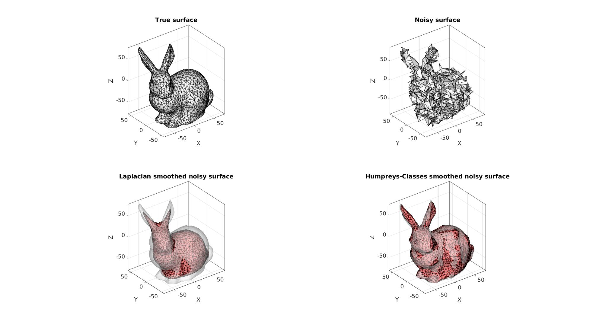
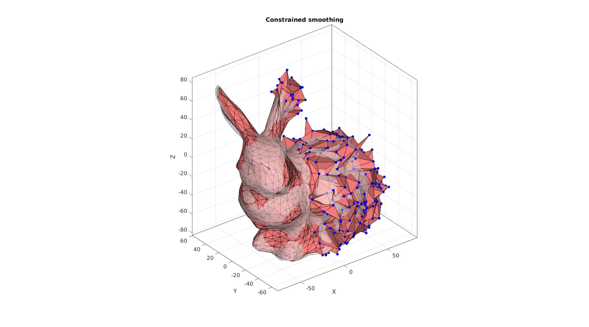

patchSmooth
Below is a demonstration of the features of the patchSmooth function
Contents
clear; close all; clc;
Syntax
[P]=patchSmooth(F,V,IND_V,optionStruct);
Description
This function can smoothen the input surface surface data specified by the faces F and the nodal/vertex data V. V is typically an nx3 vertex coordinate array, where n is the number of vertices. However V may represent a general nxm array where m>0. m=1 for instance for scalar nodal data, examples include vertex quantities such as displacement magnitude and temperature.
Examples
Plot settings
fontSize=15; cMap=gjet(250);
Example 1: Smoothing a triangulated surface
% Creating example data [F,V]=stanford_bunny; %Some graphics data V_true=V; % Add noise V_noisy=V+5*randn(size(V));
Smoothen using patchSmooth. Two methods are shown here, 'LAP', which refers to Laplacian Smoothing, and 'HC' which refers to Humphreys-Classes smoothing
%Set number of iterations to use smoothParameters.n=25; %Number of iterations %Smooth using Laplacian smoothing method smoothParameters.Method='LAP';%Smooting method V_smooth1=patchSmooth(F,V_noisy,[],smoothParameters); %Smooth using HC method smoothParameters.Method='HC'; %Smoothing method V_smooth2=patchSmooth(F,V_noisy,[],smoothParameters);
Visualization to compare smoothening methods
cFigure; subplot(2,2,1); hold on; title('True surface','FontSize',fontSize); gpatch(F,V,'w','k',1); axisGeom(gca,fontSize); camlight headlight; subplot(2,2,2); hold on; title('Noisy surface','FontSize',fontSize); gpatch(F,V_noisy,'w','k',1); axisGeom(gca,fontSize); camlight headlight; subplot(2,2,3); hold on; title('Laplacian smoothed noisy surface','FontSize',fontSize); gpatch(F,V,'w','none',0.5); gpatch(F,V_smooth1,'rw','k',1); axisGeom(gca,fontSize); camlight headlight; subplot(2,2,4); hold on; title('Humpreys-Classes smoothed noisy surface','FontSize',fontSize); gpatch(F,V,'w','none',0.5); gpatch(F,V_smooth2,'rw','k',1); axisGeom(gca,fontSize); camlight headlight; drawnow;
indRigid=find(V(:,1)>mean(V(:,1))); %Smooth with constraints smoothParameters.n=25; %Number of iterations smoothParameters.Method='HC'; %Smoothing method smoothParameters.RigidConstraints=indRigid; %Vertices to not keep constant V_smooth_con=patchSmooth(F,V_noisy,[],smoothParameters);
Visualization to compare smoothening methods
cFigure; hold on; title('Constrained smoothing','FontSize',fontSize); gpatch(F,V,'w','none',0.5); gpatch(F,V_smooth_con,'rw','k',1); plotV(V_smooth_con(indRigid,:),'b.','MarkerSize',25) axisGeom(gca,fontSize); camlight headlight; drawnow;

GIBBON www.gibboncode.org
Kevin Mattheus Moerman, gibbon.toolbox@gmail.com
GIBBON footer text
License: https://github.com/gibbonCode/GIBBON/blob/master/LICENSE
GIBBON: The Geometry and Image-based Bioengineering add-On. A toolbox for image segmentation, image-based modeling, meshing, and finite element analysis.
Copyright (C) 2006-2022 Kevin Mattheus Moerman and the GIBBON contributors
This program is free software: you can redistribute it and/or modify it under the terms of the GNU General Public License as published by the Free Software Foundation, either version 3 of the License, or (at your option) any later version.
This program is distributed in the hope that it will be useful, but WITHOUT ANY WARRANTY; without even the implied warranty of MERCHANTABILITY or FITNESS FOR A PARTICULAR PURPOSE. See the GNU General Public License for more details.
You should have received a copy of the GNU General Public License along with this program. If not, see http://www.gnu.org/licenses/.